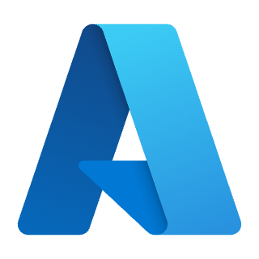

From cloud to
production inference.
At Apple through Mphasis, I owned GPU Kubernetes, model onboarding tooling, and Solr infrastructure. I co-owned the enterprise AI platform that connected model serving, retrieval, and application teams.

Azure Google Cloud Alibaba Cloud

- 15+
- GPU and platform Kubernetes clusters across environments
- ~7.0s → ~1.9s
- Solr vector-query latency
- 15,000+
- Embedding collections across five Solr clusters in one region
- $500K+
- Combined Solr and Mac infrastructure savings
Getting models from weights to production
I owned the GPU Kubernetes cluster lifecycle, capacity planning, scaling, and production incident response. I built API-backed onboarding tooling that staged weights from S3 to FSx, verified checksums, and integrated with Argo CD and Flux.
I ran pre-onboarding inference evaluations with a Principal Development Engineer. We varied input and output length, concurrency, batching, precision, KV-cache settings, and GPU parallelism, then measured latency, throughput, memory, errors, cost, and output quality.
- V100
- A10G
- L40S
- A100
- GB300
- Qwen3-235B-A22BQwen
- Mixtral-8x22B-Instruct-v0.1Mistral AI
- gpt-oss-120bOpenAI
- Apple foundation modelsEnterprise platform workloads
Serving work included general-purpose, reasoning, coding, and vision or multimodal models.
Making vector search faster at fleet scale
I owned Solr 9.9 infrastructure, provisioning, infrastructure as code, and performance across roughly 200 nodes in multiple regions. I also co-owned Elasticsearch and Milvus infrastructure with the team.
I led the migration of roughly 200 Solr nodes to Graviton, using validation tooling to preserve query throughput. The migration reduced that infrastructure cost by 19.8%, or about $266K annualized.
Modernizing a platform that had to stay recoverable
Through Cloudwick, I helped replace manual VMware workflows with cloud-native infrastructure and automated deployments. I led mortgage-document migration work from Hadoop and Solr to Elasticsearch/OpenSearch and S3, and built recovery automation using Airflow and Python.
The modernization included active-active US East and West infrastructure. The delivered hybrid-cloud recovery environment achieved an approximately 15-minute RPO and 2-hour RTO.
Read the cloud and recovery caseCross-region replication · Snapshots · Restore automation
Systems I helped put into production
Inference Lab
An open-source lab for reproducible vLLM serving experiments. It onboards Hugging Face models, runs them on Modal GPUs, compares latency and throughput, and records configuration and cleanup evidence. Four Qwen2.5 sizes passed serving smoke tests.
Explore Inference Lab on GitHubThe distributed systems foundation
Earlier at Cloudwick, I operated Amobee’s Hadoop and HBase environments at up to ~400 nodes per cluster and 30 PB total capacity. At Limelight Networks, I designed recovery for a Hadoop billing platform and operated an ~80-node video analytics cluster.
M.S. in Computer Science, Texas A&M University–Kingsville · Nebius AI CloudOps Engineer Certification